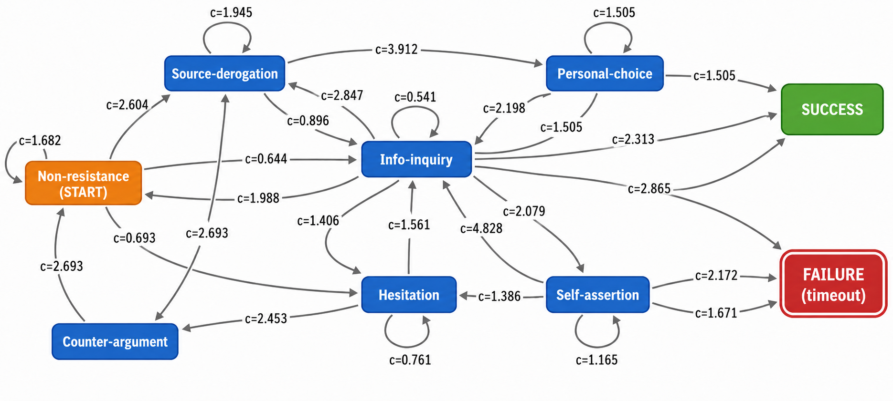

COMPASS
基於對話狀態轉移預測與對話路徑分析之說服式對話系統
Contrastive Outcome-guided Modeling of Path-Aware State Shifts for Persuasive Dialogue Systems
研究問題
讓對話 AI 不只判斷「下一句怎麼說」，還能評估採用某個策略後，整段對話會更接近成功或更可能失敗。
研究方法
先將對話歷史表示為對方抗拒狀態的機率分布，逐一預測每個候選策略可能造成的下一狀態與終止結果；再依資料支持度融合歷史轉移統計與語境模型，建立每輪更新的動態路徑圖。最後以成功／失敗雙終局回推有限視界的期望成本，並用風險權重在「推進目標」與「避免破局」之間選擇策略。
研究成果
COMPASS 在本研究固定資料與評估設定下，4 組成功對話平均回合數皆縮短。以主表中提升幅度最大的一組 CraigslistBargain／GPT‑3.5 為例，相較 ASTRO（Automatic Strategy Optimization，ACL Findings 2025），成功率由 17.6% 提升至 74.86%，增加 57.26 個百分點；成功對話平均回合數由 6.89 輪降至 4.858 輪，減少 2.032 輪。
貢獻
- 將策略評估由單一回合提升為整段後續對話路徑，從全局角度選擇能帶來較佳長期結果的策略。
- 在同一轉移圖中分離計算成功與失敗路徑成本，使系統能同時判斷候選策略是否更接近成功，以及是否遠離失敗。

